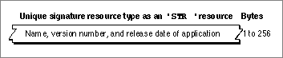

Legacy Document
Important: The information in this document is obsolete and should not be used for new development.
Important: The information in this document is obsolete and should not be used for new development.


The Signature Resource
Every application that creates documents should define a signature resource, so that the Finder can identify and start up the application when a user double-clicks documents created by the application. A signature resource is typically defined to be a string resource (that is, a resource of type'STR ') that is given a unique four-character signature as its resource type. For example, an application with the signature of WAVE would use a string resource to define its signature resource as a resource of type'WAVE'. The signature resource should have a resource ID number of 0.To ensure uniqueness, developers must register their applications' four-character signatures with Apple Computer, Inc., at Macintosh Developer Technical Support.
This section describes the structure of a signature resource defined to be of type
'STR 'after it's compiled by the Rez resource compiler. The format of a Rez input file for a signature resource differs from its compiled output form. If you are concerned only with creating a signature resource, see "Giving a Signature to Your Application and a Creator and a File Type to Your Documents" beginning on page 7-7.If you examine a compiled version of a signature resource, as shown in Figure 7-16, you find that it contains a Pascal string that specifies the name, version number, and release date of the application.
Figure 7-16 Structure of a signature resource compiled as a string (
'STR ') resource
If an application does not provide specific version information through a version resource (described in "Providing Version Resources" beginning on page 7-29), the Finder displays the string stored in the signature resource when the user selects the application and chooses Get Info from the File menu.